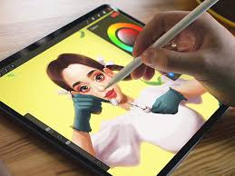
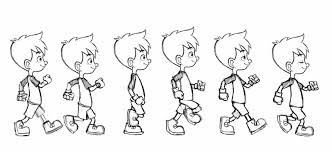
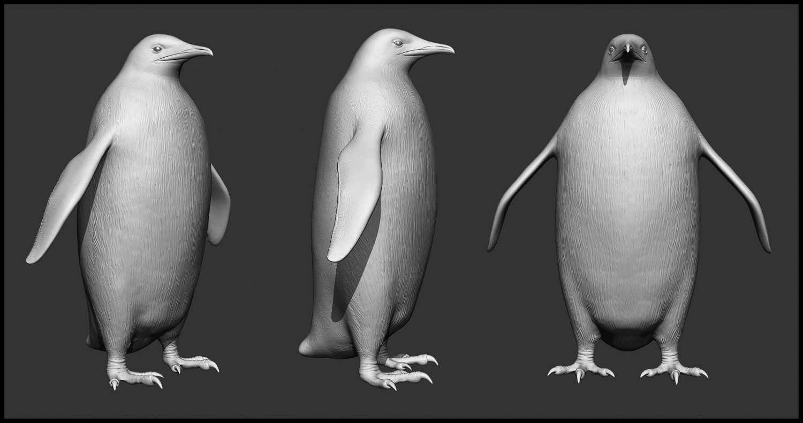

Digital art is a form of art where you draw/create on a device, like an ipad or on a drawing tablet.
There are many types of digital art, the most common being just drawing digitally, but there are also other ways, like animation and 3D modelling. Animation is drawing every frame and making it a little bit different each time, so when you play them all, it seems like it's moving.
3D modelling, on the other hand, is different. It is not something you draw, but something you model. It is a lot easier to animate with, since every part is moveable and you do not have to redraw every frame.
| Digital art | Animation | 3D modelling |
|---|---|---|
 |
 |
 |